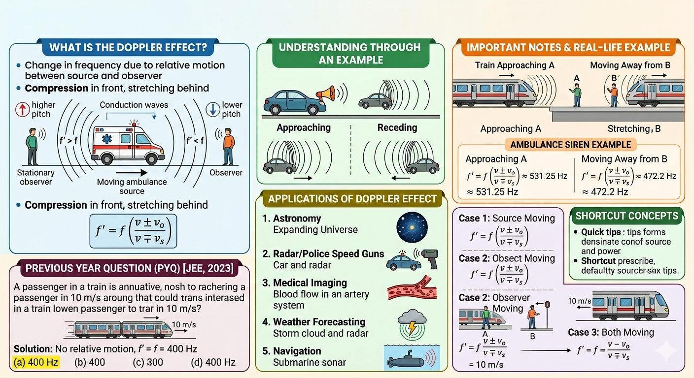

Doppler Effect

Image generated by Google AI
Have you ever stood near a busy road or a railway crossing, just watching the world move around you? Maybe you heard the distant honk of a car, or the sharp whistle of a train cutting through the air. For a moment, without even realizing it, you noticed something curious, the sound felt different as it came closer and then drifted away.
If you pay close attention, there is an interesting subtlety here, the change in sound is not gradual in the way we usually expect. There is often a distinct “jump” in pitch right as the source crosses you. That tiny moment captures a deep physical truth about how waves carry information through space and time.
Have you ever stood near a railway track and noticed how the sound of a train whistle changes as it approaches and then passes you? That sudden shift in pitch, higher as it comes near and lower as it moves away, is a real-life experience of the Doppler Effect.
This phenomenon is not limited to trains. It is used in radar, weather forecasting, medical imaging, and even astronomy to study stars and galaxies. In fact, this simple shift in sound connects directly to how scientists measure the expansion of the universe and detect motion in places we can never physically reach. Let us explore what causes the Doppler Effect, how it works, and where it shows up in everyday life.
What is the Doppler Effect?
Now let us slow down for a second and really understand what is happening behind this everyday observation.
The Doppler Effect is the change in frequency (or pitch) of a wave in relation to an observer who is moving relative to the wave source.
In other words, it is not that the source is changing what it emits, it’s your relative motion with respect to the source that changes what you hear or observe. The wave itself is being “sampled” differently depending on motion.
In simple terms:
- If the source moves towards the observer, the waves get compressed. The observer hears a higher frequency.
- If the source moves away, the waves get stretched. The observer hears a lower frequency.
This effect applies to all types of waves, sound waves, light waves, water waves, and so on. However, it is easiest to understand with sound, because you can literally hear the change happening in real time. What you are really detecting is a change in how frequently wavefronts reach you.
Understanding Through an Example
Let us picture a simple situation you have definitely experienced.
Imagine a car honking its horn while moving past you. As it approaches, the horn sounds sharp. As it recedes, the sound drops in pitch. However, for someone inside the car, the horn sounds the same throughout. This happens because the sound waves are bunched up in front of the car and stretched out behind it.
If you could freeze time and “see” the sound waves, you would notice that the spacing between them (wavelength) is smaller in front and larger behind. That spatial rearrangement of waves is what your ears interpret as a change in pitch.
So while you experience a changing pitch, the person inside the car doesn’t notice any difference at all. That contrast is the key to understanding that the Doppler Effect depends on relative motion.
Mathematical Expression
Now that you have an intuitive feel for it, let us translate this idea into mathematics. Don’t worry, it’s simpler than it looks once you connect it with the concept.
At its core, every formula you are about to see is just a mathematical way of counting how frequently wavefronts reach the observer.
The apparent frequency \( f' \) heard by an observer depends on:
- The actual frequency \( f \) of the source
- The speed of the source and observer
- The speed of sound in the medium
Case 1: Source Moving, Observer Stationary
This formula might look technical, but think of it this way: when the source moves, it either compresses or stretches the wavefronts, and that directly changes what you hear.
A deeper insight here is that the speed of sound \( v \) remains unchanged, the medium determines it. What changes is the spacing of wavefronts, which alters the frequency.
Where:
- \( f' \) = apparent frequency
- \( f \) = actual frequency
- \( v \) = speed of sound in medium
- \( v_s \) = speed of source
Signs:
- Use \( -v_s \) if the source is moving towards the observer (frequency increases)
- Use \( +v_s \) if the source is moving away (frequency decreases)
Case 2: Observer Moving, Source Stationary
Here, instead of the source, you are the one moving, so you are effectively encountering wavefronts more quickly or more slowly.
You can think of this as “running into” waves or “running away” from them, which changes how often they hit you.
Where \( v_o \) is the observer’s speed.
- Use \( +v_o \) if the observer moves towards the source
- Use \( -v_o \) if the observer moves away
Case 3: Both Moving
This is the most general case, both you and the source are in motion, and the combined effect determines what you hear.
This combined formula is powerful because it can describe everything from a passing siren to moving stars emitting light across the universe.
Important Notes
Before moving ahead, let us clear up a few important ideas that often confuse students.
- The Doppler Effect is most noticeable in sound because sound requires a medium, and relative motion between the source, observer, and medium affects the wave.
- In electromagnetic waves (such as light), there is no need for a medium. The Doppler Effect still occurs and is used in astronomy (redshift and blueshift).
A deeper point: for light, the Doppler Effect connects with relativity. At very high speeds (close to the speed of light), the classical formulas are modified, leading to relativistic Doppler shift, one of the key tools in modern astrophysics.
Applications of Doppler Effect
What makes the Doppler Effect truly fascinating is how widely it is used, far beyond just trains and cars.
-
Astronomy:
Redshift tells us that galaxies are moving away, which is one of the pieces of evidence supporting the expanding universe. -
Radar and Police Speed Guns:
These devices measure the speed of a moving vehicle by bouncing radio waves off it and analyzing the frequency shift. -
Medical Imaging (Doppler Ultrasound):
It is used to measure blood flow speed in arteries and veins. -
Weather Forecasting:
Doppler radar is used to track storms, rainfall, and wind speeds. -
Navigation:
Submarines use sonar (sound navigation and ranging) to determine distances and relative motion underwater.
On a deeper level, Doppler measurements allow us to detect motion indirectly. For example, astronomers detect exoplanets by observing tiny periodic shifts in a star’s light—caused by the gravitational pull of an orbiting planet.
Real-Life Example: Ambulance Siren
Let us take a real-world numerical example to make things crystal clear.
Let us say an ambulance approaches with a siren frequency of 500 Hz and moves at 20 m/s. If the speed of sound is 340 m/s, what frequency does a stationary observer hear?
Notice how the frequency increases as the ambulance approaches, you hear a sharper, higher-pitched sound. Your ear is effectively receiving more wavefronts per second.
As the ambulance moves away:
Now the pitch drops, and the sound feels deeper. This happens because fewer wavefronts reach you per second. This change in pitch is noticeable to any person standing still.
Common Misconceptions
Let us quickly address a few misconceptions so you don’t fall into common traps.
- The Doppler Effect does not change the speed of the wave, only the frequency and wavelength change.
- The effect is symmetrical only when the observer and source move in a straight line towards or away from each other.
- The Doppler Effect does not require a special medium, light experiences Doppler shift even in a vacuum.
Another subtle point: many people think the source “emits a different frequency” when moving. It doesn’t, the emitted frequency remains the same. The change is purely due to relative motion and wavefront spacing.
Shortcut Concepts
If you are revising quickly before an exam, these shortcuts can save you time.
- Source towards observer: frequency increases
- Source away from observer: frequency decreases
- Observer moving towards source: hears higher frequency
- Observer moving away: hears lower frequency
- General formula:
A quick mental trick: always think in terms of “wavefronts per second reaching the observer.” That idea alone can guide you to the correct sign in most problems.
Quick Review Questions
Let us quickly test your understanding.
-
What is the Doppler Effect?
It is the change in frequency due to relative motion between the source and the observer. -
What happens to the pitch of a siren as it moves away from you?
The pitch (frequency) appears lower. -
Does the Doppler Effect affect light?
Yes, it results in redshift or blueshift depending on motion. -
Is the speed of the wave affected by the Doppler Effect?
No, only frequency and wavelength change. -
Give one medical use of the Doppler Effect.
Measuring blood flow using Doppler ultrasound.
Previous Year Question (PYQ)
Q.1
The engine of a train moving with speed \(10 \, \text{m/s}\) towards a platform sounds a whistle at frequency \(400 \, \text{Hz}\).
The frequency heard by a passenger inside the train is (neglect air speed. Speed of sound in air = \(330 \, \text{m/s}\)):
[JEE, 2023]
Before jumping to calculations, pause and think, what really matters here? Is there any relative motion between the passenger and the source?
- 400 Hz
- 388 Hz
- 412 Hz
- 200 Hz
Solution:
Since the passenger is inside the train, both the source (engine) and the observer (passenger) are moving together. There is no relative motion between them. The sound source and the observer are in the same frame of reference.
That’s the key insight, no relative motion means no Doppler shift.
Hence, the frequency heard by the passenger is:
Answer: (a) 400 Hz